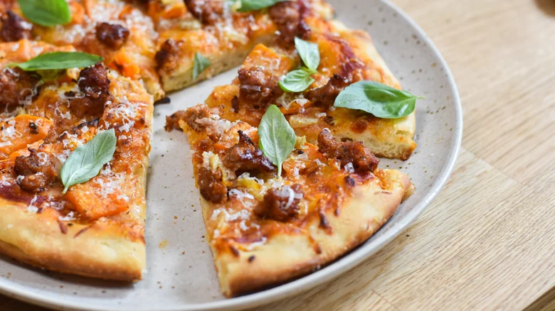

Italian Sausage And Sweet Potato Pizza Recipe
Back to main

Ingredients list:
- 2 cups flour
- 5 ounces water
- ⅛ teaspoon instant yeast
- ½ teaspoon kosher salt
- 2 tablespoons olive oil, divided
- ½ small sweet potato
- ½ cup fennel, thinly sliced
- 4 ounces ground hot Italian sausage
- ¼ cup tomato sauce
- ¼ cup shredded mozzarella cheese
- 6 basil leaves, for topping
- Parmesan cheese, for topping
| Preparation time |
Cooking time |
Serving size |
10 minutes |
12 minutes |
1 9-inch pizza |
Instructions:
- Mix flour, water, yeast, salt, and 1 tablespoon olive together in a large bowl.
- Cover with a clean towel and let rise on the countertop for 4 hours, or overnight in the fridge.
- Preheat the oven to 400 F. Line a baking sheet with foil and grease with cooking spray.
- Peel sweet potato and cut into quarters, then small ¼-inch thick slices.
-
Add sweet potato and fennel to the baking sheet and toss with a splash of oil, salt, and pepper. Bake 26-28 minutes, until vegetables are
fork-tender. Cool completely.
- Add 1 tablespoon olive oil to a 9-inch cast iron pan. Stretch the dough into the edges with your fingertips. Let rise for 20 minutes.
- Preheat the oven to 500 F.
- While dough rises, cook the sausage. Add sausage to a skillet over medium heat. Cook 7-9 minutes, until no longer pink.
- Add two spoonfuls of tomato sauce to the top of the pizza. Spread it evenly with the back of the spoon, leaving a ½-inch border.
- Sprinkle on a handful of mozzarella cheese.
- Top the pizza with the cooked sausage, fennel, and sweet potato.
- Bake for 12-15 minutes, until cheese is melted and crust is browned.
- Top the pizza with basil leaves and grated Parmesan.
- Slice and serve hot.